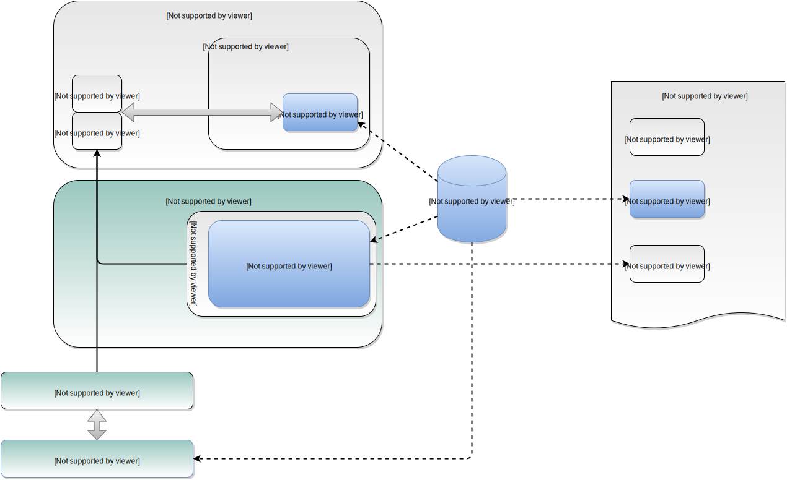

inspect and adapt
Software...
is integral
Abstraction
Reuse
... third party

Reuse
... internally
write_address <= 16'h00A0; // enable register write_data <= 1'b0; write_enable <= 1'b1; #20 write_enable <= 1'b0;
ENA = uvm_reg_field::type_id::create("ENA"); ENA.configure (this, 1, 0, "RW", 0, 1'h0, 1, 1, 1); uvm_reg my_reg; m_regmodel.get_reg_by_name("ENA"); my_reg.write(status, data, .parent(this));
void enable() { IORD(ENABLE_BASE, 2) & 0x80) IOWR(ENABLE_BASE, 5, 0x1D); }
Python makes this easy
- SWIG
- ctypes
- Boost.Python
C++
void ExampleHal::enable(void) { m_reg->control.enable = 1; }
Testbench
from xactly.simulation import load_hal import build.software.pyexample as regs # Auto-discover the HAL hal = yield load_hal(regs.ExampleRegisters, tb.mm_master) # Call into C++ to control the design yield hal.enable()
integration
communication
documentation
- accurate
- accessible
- concise
- coherent
abstraction
- Avalon-MM vs AXI-4 vs Wishbone
- Resets
- synchronous vs asynchronous
- active low vs active high
- Register access
IOWR32(MAC_ADDRESS_LOW, mac_address[31:0]); IOWR32(MAC_ADDRESS_HIGH, mac_address[47:32]);
IOWR8(MAC_ADDRESS_0, mac_address[7:0]); IOWR8(MAC_ADDRESS_1, mac_address[15:8]); IOWR8(MAC_ADDRESS_2, mac_address[23:16]); IOWR8(MAC_ADDRESS_3, mac_address[31:24]); IOWR8(MAC_ADDRESS_4, mac_address[39:32]); IOWR8(MAC_ADDRESS_5, mac_address[47:40]);

m_regs->control.mac_address = 0x902c374a30f4;

the demo...
recap
automation
- Cookiecutter
- Jenkins -> Jenkins job
- Jenkins job
- Simulation regression
- Datasheet
- Waveform diagrams from simulation
- Doxygen from C++
- Register definitions
- Block-level synthesis
visibility
- Coverage data from Riviera
- C++ coverage from gcov
- Build times
- Resource usage in hardware
- Warnings from the tools
integration
- C++ HAL developed in simulation
- "free" socket-based testbench
- Debug tools for HW/sim